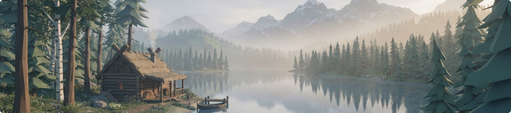

Каталог ігрових модифікацій

Популярні модифікації
Покращений інтерфейс Valheim Категорія: Інтерфейс

Модифікація робить інвентар зручнішим і покращує читабельність ігрового інтерфейсу, зберігаючи оригінальний стиль гри.
| Характеристика | Значення |
|---|---|
| Версія моду | v1.4.2 |
| Підтримувана гра | Valheim |
| Розмір файлу | 15 MB |
Реалістичні текстури води Категорія: Графіка

Пакет текстур високої роздільної здатності, який додає реалістичні відображення та фізику води у гру.
| Характеристика | Значення |
|---|---|
| Версія моду | v2.1.0 |
| Підтримувана гра | Minecraft |
| Розмір файлу | 120 MB |